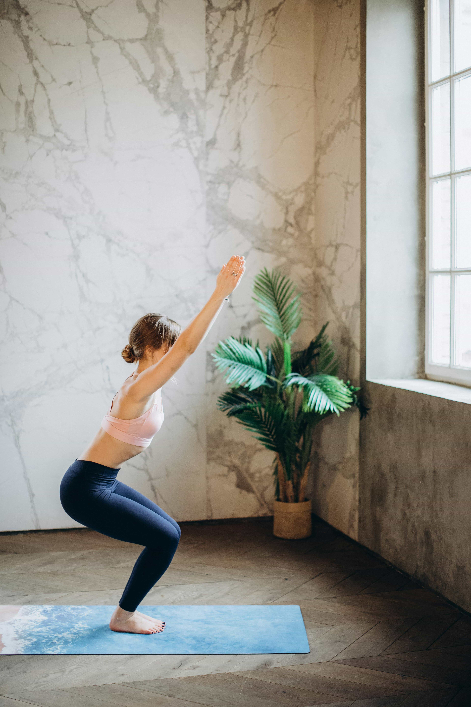
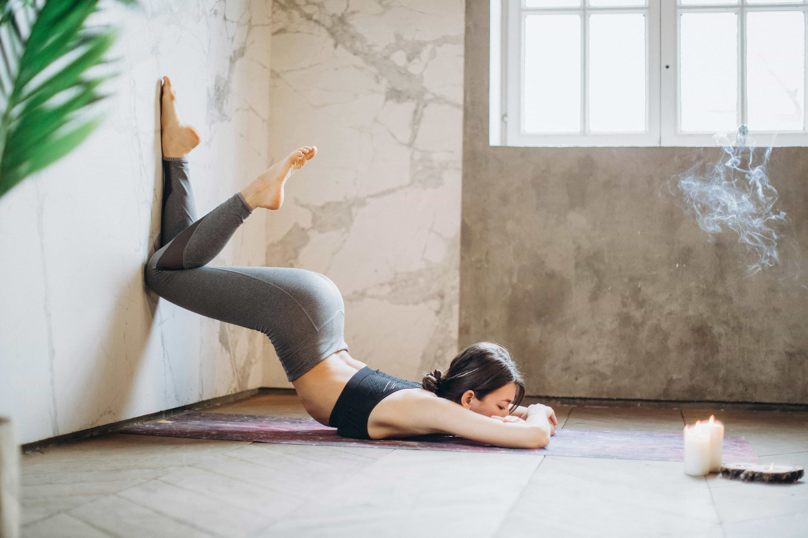
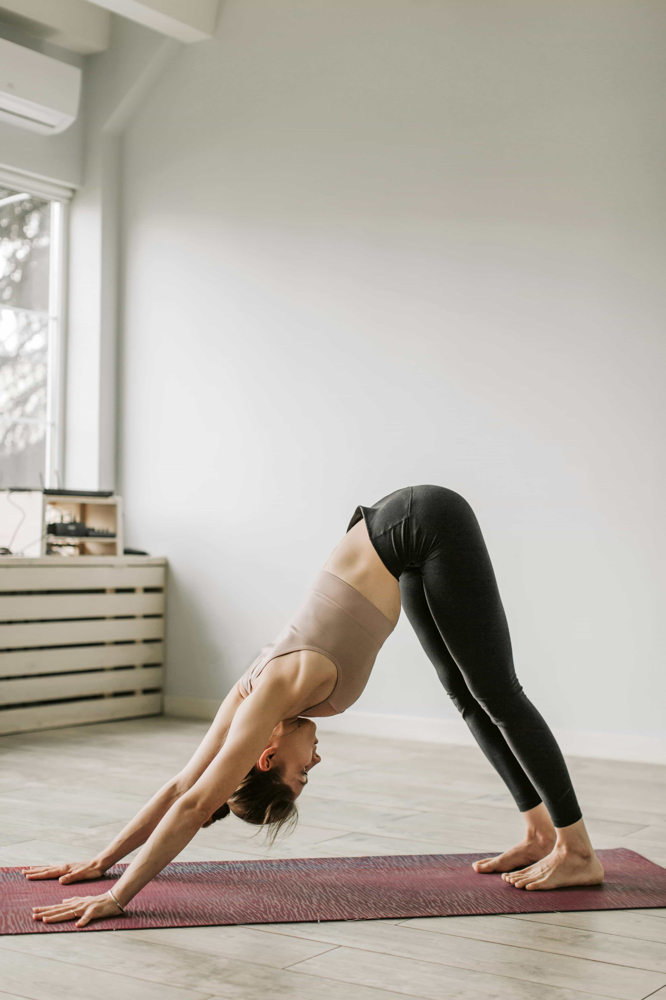

How to practice Yoga coorectly?
Is it sport or spiritual practice?
Yoga is a set of physical exercises that tone the body and soul. Unlike regular fitness, yoga does not require excessive effort, exhaustion, or testing your strength. It is a complex of poses and meditations that affect the physical and spiritual structure of the body. Although yoga is now more commonly practised by women, in the past it was mainly practised by men. Incidentally, the oldest written work on the art of yoga belongs to the Indian sage Patanjali.
Yoga exercises affect the mind and body, direct thoughts and maintain harmony. Therefore, it should not be perceived as an ordinary sport, but as exercises for mental balance and physical well-being.
Yoga classes reduce stress. Studies have shown that yoga reduces mental disorders and symptoms of stress. Such classes serve as a good release for the body and mind. Thanks to these exercises, anxiety levels decrease and symptoms of depression disappear. Comprehensive classes improve balance, reduce back pain and strengthen bones.
 In fact, yoga does not require too much time and effort. Trainers advise doing as many exercises as you can and those that you are capable of. Often, the idea that yoga is only for flexible people is an obstacle to starting classes. However, this is a misconception. It is this practice that develops flexibility. What is the point of learning letters if you already know how to read? Yoga will help you develop flexibility, and simple poses will gradually become more complex. Therefore, it is worth starting with simple asanas (poses) to prepare your muscles.
Yoga is not a religion, so you don't need to study Hinduism to start practising. Yes, the ideas of yoga are sometimes intertwined with philosophies, but religious beliefs do not influence this.
Iryna Vizlou has been practising yoga for four years, three of which she has worked as an instructor. She attended her first class thanks to a friend who gave her a gift certificate for a class. Later, she completed a course based on Yuriy Sulik's method and became a certified instructor. She says her interest in yoga began with a desire to improve her health.
Where should beginners start?
Just get on the mat and start practising. Listen to yourself and your body, and love yourself.
Which is better: trying it on your own or with a trainer?
Of course, I recommend working with a trainer. Whether individually or in a group is up to you. However, for proper and safe practice, it is worth starting under the supervision of a qualified instructor. Of course, there are many online classes available now, but it is still safer for your health to be supervised by a trainer. There is a belief that you need to find your teacher, but to do that, you need to take action. Search, practise, and you will definitely find them.
Is it necessary to combine exercise and meditation?
Yes, it is necessary for health. For me, it is important to maintain balance in life – to be physically and spiritually healthy, and therefore happy. Practice (asanas) helps physical health, and meditation affects mental and spiritual health. 
Is it important to monitor your breathing in yoga? Why?
It is important to monitor your breathing not only in yoga, but also in everyday life. It helps you live in the here and now, maintain balance, and be calm and harmonious. By controlling our breathing, we control our own lives, emotions and health. The states we experience on the mat should definitely be carried over into our daily routine.
How does regular yoga practice affect daily life?
It is necessary to practise regularly and consistently. We transfer this into our daily lives, improving their quality and increasing our stress resistance. We bring balance into our lives.
Is yoga related to nutrition?
Yes, because we change and our habits change at the same time. It is often said that everyone who practises yoga is a vegetarian. This is a personal choice for everyone.
How long should classes last?
It all depends on your body type, how you feel, and many other factors. Therefore, it is important to consult with a trainer to successfully choose the right time and intensity of classes.
What exercises should you start with when learning yoga?
Those that develop you, after which you feel better and want to continue. The adaptive holistic yoga method involves the whole body, but takes into account the individual characteristics of each person.
How is yoga beneficial for pregnant women?
Yoga for pregnant women is beneficial not only for the expectant mother but also for the baby. First and foremost, it improves the emotional and physical condition of both the mother and the baby. Regular practice allows you to prepare for the upcoming birth and recover after the baby is born.
Emotional attitude is very important for yoga practice. Nothing should distract your attention, and the atmosphere around you should inspire and calm you. Therefore, music, scented candles or other fragrances are often used during classes.
In total, there are about 900 yoga poses, but only about 100 are commonly used. Each asana should be approached with care and all instructions should be followed. Each pose affects a particular organ, so carelessness can be harmful.
Take your inspiration
30-Minute Yoga For Beginners
Gentle Yoga for Flexibility & Stress Reduction
Gentle Full Body Yoga Flow
Morning Yoga For Beginners